| 몬스터볼 | |||
|---|---|---|---|
| 품목 | 가격 | ||
| 몬스터볼 |

|
야생 포켓몬에게 던져서 잡기 위한 볼. 캡슐식으로 되어 있다. |
200원 |
| 슈퍼볼 |
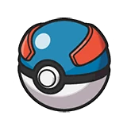 |
몬스터볼보다도 더욱 포켓몬을 잡기 쉬워진 약간 성능이 좋은 볼. |
600원 배지를 하나 얻었을 때 |
| 하이퍼볼 |
슈퍼볼보다도 더욱 포켓몬을 잡기 쉬워진 매우 성능이 좋은 볼. |
1200원 배지를 셋 얻었을 때 |
|
| 회복 아이템 | |||
| 품목 | 가격 | ||
| 상처약 |
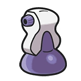 |
스프레이식의 상처약. 잔상처를 치료할 수 있다. |
200원 |
| 좋은상처약 |
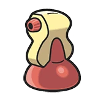 |
스프레이식의 상처약. 가벼운 상처를 치료한다. |
1200원 배지를 둘 얻었을 때 |
| 고급상처약 |
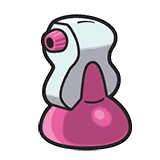 |
스프레이식의 상처약. 깊은 상처도 치료한다. |
3000원 배지를 셋 얻었을 때 |
| 상태회복 아이템 | |||
| 품목 | 가격 | ||
| 해독제 |
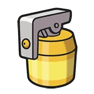 |
스프레이식의 약. 독을 치료할 수 있다. |
500원 |
| 마비치료제 |
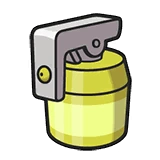 |
스프레이식의 약. 마비를 치료할 수 있다. |
500원 |
| 화상치료제 |
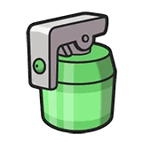 |
스프레이식의 약. 화상을 치료할 수 있다. |
500원 |
| 잠깨는약 |

|
마시는 약. 포켓몬 1마리의 잠듦 상태를 회복한다. |
500원 |
| 만병통치제 |
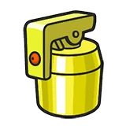 |
스프레이식의 약. 독, 얼음, 마비, 화상을 치료한다. |
1000원 배지를 둘 얻었을 때 |
| 도구 | |||
| 품목 | 가격 | ||
| 벌레회피스프레이 |
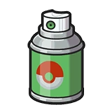 |
1로그동안 야생 포켓몬을 마주치지 않는다. |
500원 배지를 하나 얻었을 때 |
| 실버스프레이 |
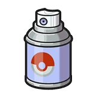 |
2로그동안 야생 포켓몬을 마주치지 않는다. |
1000원 배지를 둘 얻었을 때 |
| 골드스프레이 |
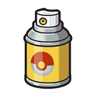 |
3로그동안 야생 포켓몬을 마주치지 않는다. 순금이 소량 함유. |
50000원 배지를 셋 얻었을 때 |
| 동굴탈출로프 |
길고 튼튼한 끈. 던전에서 빠져나올 수 있다. |
1000원 배지를 하나 얻었을 때 |
|
| 낡은낚시대 |
낡았지만 튼튼한 낚시대. 포켓몬을 낚을 수 있다. |
3000원 | |
| 기술머신 | |||
| 품목 | 가격 | ||
| 기술머신17 방어 |

|
상대의 공격을 전혀 받지 않는다. 연속으로 쓰면 실패하기 쉽다. |
3000원 |
| 기술머신31 깨트리기 |

|
수도로 기세 좋게 내려쳐서 공격한다. 빛의장막이나 리플렉터 파괴할 수 있다. |
3000원 |
| 기술머신39 암석봉인 |
암석을 내던져서 공격한다. 상대의 움직임을 봉인함으로써 스피드를 떨어뜨린다. |
3000원 | |
| 기술머신48 로킥 |
|
재빠른 움직임으로 상대의 다리를 노려 공격한다. 상대의 스피드를 떨어뜨린다. |
3000원 |
| 기술머신13 리플렉터 |
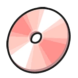 |
이상한 장막을 쳐서 상대로부터 받는 물리공격의 데미지를 약하게 한다. |
4000원 배지를 하나 얻었을 때 |
| 기술머신27 흡혈 |
피를 빨아서 공격한다. 준 데미지의 절반을 HP로 회복한다. |
4000원 배지를 하나 얻었을 때 |
|
| 기술머신32 그림자분신 |
|
재빠른 움직임으로 분신을 만들어 상대를 혼란시켜 회피율을 올린다. |
4000원 배지를 하나 얻었을 때 |
| 기술머신47 도둑질 |
공격과 동시에 도구를 훔친다. 자신이 도구를 지니고 있을 경우에는 훔칠 수 없다. |
4000원 배지를 하나 얻었을 때 |
|
| 기술머신08 모래바람 |
모래바람으로 바위, 땅, 강철타입 이외의 포켓몬에게 데미지를 준다. 바위 타입 포켓몬은 특수방어가 상승한다. |
4000원 배지를 하나 얻었을 때 |
|
| 기술머신14 빛의장막 |
이상한 장막으로 상대로부터 받는 특수공격의 데미지를 약하게 한다. |
4000원 배지를 하나 얻었을 때 |
|
| 기술머신19 기가드레인 |
양분을 흡수하여 공격한다. 입힌 데미지의 절반에 해당하는 HP를 회복할 수 있다. |
4000원 배지를 하나 얻었을 때 |
|
| 기술머신40 제비반환 |

|
재빠른 움직임으로 상대를 농락해 벤다. 공격은 반드시 명중한다. |
4000원 배지를 하나 얻었을 때 |
| 기술머신49 스톤샤워 |
큰 바위를 세차게 부딪쳐서 공격한다. 상대를 풀죽게 만들 때가 있다. |
4000원 배지를 하나 얻었을 때 |
|
| 기술머신12 도발 |
상대를 화나게 한다. 상대는 진정하기 전까지 데미지를 주는 기술밖에 쓸 수 없게 된다. |
6000원 배지를 둘 얻었을 때 |
|
| 기술머신33 냉동펀치 |
냉기를 담은 펀치로 상대를 공격한다. 얼음 상태가 되는 경우가 있다. |
6000원 배지를 둘 얻었을 때 |
|
| 기술머신34 번개펀치 |
전격을 담은 펀치로 상대를 공격한다. 마비 상태로 만들 때가 있다. |
6000원 배지를 둘 얻었을 때 |
|
| 기술머신35 불꽃펀치 |
불꽃을 담은 펀치로 상대를 공격한다. 화상 상태가 되는 경우가 있다. |
6000원 배지를 둘 얻었을 때 |
|
| 기술머신45 볼트체인지 |
공격한 뒤 굉장한 스피드로 돌아와서 교대 포켓몬과 교체한다. |
6000원 배지를 둘 얻었을 때 |
|
| 기술머신15 냉동빔 |
냉동빔을 상대에게 발사하여 공격한다. 얼음 상태로 만들 때가 있다. |
8000원 배지를 셋 얻었을 때 |
|
| 기술머신22 솔라빔 |
빛을 가득 모아 빛의 다발을 발사하여 공격한다. |
8000원 배지를 셋 얻었을 때 |
|
| 기술머신24 10만볼트 |
강한 전격을 상대에게 날려서 공격한다. 마비 상태로 만들 때가 있다. |
8000원 배지를 셋 얻었을 때 |
|
| 기술머신29 사이코키네시스 |
강한 염동력을 상대에게 보내어 공격한다. 상대의 특수방어를 떨어뜨릴 때가 있다. |
8000원 배지를 셋 얻었을 때 |
|
| 기술머신37 화염방사 |
세찬 불꽃을 상대에게 발사하여 공격한다. 화상 상태로 만들 때가 있다. |
8000원 배지를 셋 얻었을 때 |
|
| 기술머신20 악의파동 |
몸에서 악의로 가득한 오라를 발한다. 상대를 풀죽게 만들 때가 있다. |
8000원 배지를 셋 얻었을 때 |
|
| 기술머신25 라이징볼트 |
지면에서 올라오는 전격으로 공격한다. 상대가 일렉트릭필드 위에 있을 때 기술의 위력이 2배가 된다. |
8000원 배지를 셋 얻었을 때 |
|
| 기술머신28 구멍파기 |
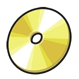 |
땅속으로 파고들었다가 올라와 상대를 공격한다. |
8000원 배지를 셋 얻었을 때 |
| 기술머신30 섀도볼 |
까만 그림자의 덩어리를 내던져서 공격한다. 상대의 특수방어를 떨어뜨릴 때가 있다. |
8000원 배지를 셋 얻었을 때 |
|
| 기술머신44 니트로차지 |
불꽃을 둘러 상대를 공격한다. 힘을 모아서 자신의 스피드를 올린다. |
8000원 배지를 셋 얻었을 때 |
|
| 기술머신16 파괴광선 |
|
강한 광선을 상대에게 발사하여 공격한다. 잠시 움직일 수 없게 된다. |
30000원 배지를 셋 얻었을 때 |
| 자판기 | |||
| 품목 | 가격 | ||
| 즉석식품 & 간식류 |
레토르트볶음면 | 캠프 요리 요리에 사용되는 식재료······ 라기보다 완제품 간편식. 입에서 불을 내뿜는 파오리의 그림이 각인되어 있다. 물을 너무 많이 넣지 않도록 주의하자! | 150원 |
| 레토르트햄버그 | 캠프 요리에 사용되는 식재료······ 라기보다 완제품 간편식. 뭘 먹을지 고민하기 귀찮을 땐 햄버그를 선택하면 실패할 일은 없다. | 200원 | |
| 초콜렛칩 | 캠프 요리에 사용되는 식재료 중 하나. 오카열매의 카카오빈을 사용해 만든 제품으로, 설탕이 첨가되지 않아 그냥 먹으면 알싸한 맛이 앞선다. 화이트, 다크, 밀크 등 여러 종류 중 골라 구매할 수 있다. 3회분으로, 초콜렛칩(1/3)과 같이 표기한다. | 250원 | |
| 견과류팩 | 캠프 요리에 사용되는 식재료 중 하나. 이런저런 견과류가 포장 안에 들어가 있다. 견과류 특유의 향에 목마른 이들은 어디든 존재해왔다······. | 250원 | |
| 과일통조림 | 캠프 요리에 사용되는 식재료 중 하나. 종류에 따른 과일이 달달한 시럽에 흠뻑 적셔져 있다. 이 물의 묘한 단맛만을 찾아 다니는 매니아 층도 있다는데······. 과일믹스, 복숭아, 파인애플, 포도 중 골라 구매할 수 있다. | 300원 | |
| 고기 & 단백질류 |
탱글탱글부어스트 | 캠프 요리에 사용되는 식재료 중 하나. 부어스트는 소시지의 한 종류다. 삶아서 먹는다. 소시지나 햄 대신 사용할 수도 있지 않을까? | 500원 |
| 베이컨 | 캠프 요리에 사용되는 식재료 중 하나. 음~ 군침 도는 훈연향! 크기가 작아도 나오는 기름 양이 생각보다 많다. | 500원 | |
| 생햄 | 캠프 요리에 사용되는 식재료 중 하나. 훈연과정을 거치지 않은 절인 고기라 그냥 먹으면 굉장히 짜다. | 500원 | |
| 프레스햄 | 캠프 요리에 사용되는 식재료 중 하나. 짭짤한 고기를 곱게 갈아서 캔에 꾹꾹 눌러담았다. ‘꾸햄’이라는 상표명이 각인되어 있다. 보통은 구워서 먹지만 이 상태로 그냥 떠서 먹는 특이한 사람들도 있다고······. | 400원 | |
| 꼬리훈제 | 캠프 요리에 사용되는 식재료 중 하나. 특유의 부들부들한 식감 덕에 구이로 먹어도 맛있지만, 젤라틴이 풍부해 국물을 내면 일품이다. 포켓몬 야돈의 꼬리는 떨어져도 금방 새로 자라니 안심해도 좋다. | 3000원 | |
| 게맛살 | 캠프 요리에 사용되는 식재료 중 하나. 절벼게의 탈피하고 남은 껍데기의 진액을 어류 포켓몬의 살에 배합해서 만든 건강한 가공식품. 당연히 진짜 절벼게의 살에는 비할 바가 되지 않지만, 느낌 정도는 낼 수 있는 식재다. | 500원 | |
| 행복달걀 | 캠프 요리에 사용되는 식재료 중 하나. 럭키가 낳은 미숙한 행복의 알이다. 영양만점에, 어쩐지 경험치가 상승하는 기분까지도! 15개 들이로, 행복달걀(7/15)와 같이 표기한다. |
500원 | |
| 채소 & 버섯류 |
채소팩 | 캠프 요리에 사용되는 식재료 중 하나. 성인 두 사람이서 든든한 한 끼를 먹을 수 있는 분량의 채소가 들어있는 팩. 다양한 채소가 들어 있어 건강에 좋아 보인다. | 300원 |
| 버섯팩 | 캠프 요리에 사용되는 식재료 중 하나. 먹기 좋은 크기로 썰린 다양한 종류의 식용 버섯이 포장되어 있다. 다양한 버섯의 질감이 식감을 바꿔준다. 몸에 좋으니 꼭꼭 씹어서 먹을 것! | 250원 | |
| 허브팩 | 캠프 요리에 사용되는 식재료 중 하나. 이런저런 허브가 포장 안에 들어가 있다. 향과 색감을 더하기 위한 필수품. | 250원 | |
| 포테이토팩 | 캠프 요리에 사용되는 식재료 중 하나. 성인 두 사람이서 든든한 한 끼를 먹을 수 있는 분량의 감자가 들어있는 팩. 매운맛을 잡아주고 부드럽게 만들어주기 때문에, 가라르의 아이들 사이에선 무화열매를 넣은 매운 감자 카레가 햄버그 다음의 인기다. | 300원 | |
| 김 | 캠프 요리에 사용되는 식재료 중 하나. 굽거나 튀겨도 좋고, 무언가를 말아도 좋고, 가루를 내어 뿌려도 좋다! 가벼우니 바람에 날아가버리지 않도록 조심하자. | 200원 | |
| 건해조류팩 | 캠프 요리에 사용되는 식재료 중 하나. 각종 해조류가 은은하게 녹아 나오는 바다의 깔끔한 감칠맛을 더해준다. | 500원 | |
| 탄수화물류 | 튼튼식빵 | 캠프 요리에 사용되는 식재료 중 하나. 접시에 남은 요리를 닦아내는 데도 유용하다. 성도의 목장에서 손수 만든 식빵으로, 우유와의 궁합이 대단히 좋다. | 250원 |
| 파스타 | 캠프 요리에 사용되는 식재료 중 하나. 밀가루를 반죽해서 만든 면이다. 면의 종류나 굵기는 ‘파스타 면’의 범주 내에서 임의로 설정할 것. | 250원 | |
| 바게트 | 잘라서 요리하기에 딱 좋아 보이는 바게트, 포장지에 백단마을의 우표가 인쇄되어 있다. 적당히 잘라서 먹어도 맛있겠지만, 요리해서 먹으면 더 맛있을 것. 팔데아 출신의 트레이너는 바게트와 식재를 세 개 이상 조합해 샌드위치를 만드는 것으로, 로그당 1회에 한해 피로도를 1 회복할 수 있다. | 300원 | |
| 간편밥 | 캠프 요리에 사용되는 식재······ 라기보다 완제품 간편식. 기본적으로 흰쌀밥이지만, 종류에 따라 잡곡밥이나 흑미밥일지도 모른다. 그냥 맛있는 밥. | 220원 | |
| 마법밀가루 | 캠프 요리에 사용되는 식재료 중 하나. 특수한 배합으로 만들어져 제빵용으로 써도 좋고, 튀김용으로 써도 문제 없이 요리하는 사람의 의도대로 형태를 이룬다. 스무 번에 걸쳐 사용할 수 있다. 마법밀가루(2/20)와 같이 표기할 것. |
3000원 | |
| 유제품 & 대체품 |
대용량 튼튼밀크 (2L) | 영양 만점의 고품질 멸균 우유로, 실온에서도 장기간 보관이 가능하다. 단백질과 칼슘이 풍부하여 체력 보충에 도움이 된다. 조리 시 부드럽고 깊은 맛을 더하는 데에도 유용하다. 네 번에 걸쳐 사용할 수 있다. 한 번에 500mL(자판기에서 판매하는 튼튼밀크 1회분)씩이다. 대용량 튼튼밀크(1/4)와 같이 표기할 것. |
1500원 |
| 튼튼치즈 | 캠프 요리에 사용되는 식재료 중 하나. 공장제의 튼튼치즈로, 모짜렐라,체다, 혹은 크림치즈 중 골라 구매할 수 있다. | 150원 | |
| 생크림 | 캠프 요리에 사용되는 식재료 중 하나. 튼튼밀크에서 뽑아낸 지방으로 만들어낸 크림이다. 디저트뿐만 아니라 수프나 요리에도 쓸 수 있다. 열심히 친다면 휘핑크림이 된다! | 300원 | |
| 산가지버터 | 캠프 요리에 사용되는 식재료 중 하나. 산가지에서 나온 고급 버터. 유청이 완벽하게 분리되어 있어, 유당불내증인 사람도 맛있게 먹을 수 있다. 비싸지만. 세 번에 걸쳐 사용할 수 있다. 산가지버터(2/3)와 같이 표기할 것. |
5000원 | |
| 마가린 | 캠프 요리에 사용되는 식재료 중 하나. 저렴한 만큼 산가지버터에 비하면 고급스러운 풍미는 떨어진다. 세 번에 걸쳐 사용할 수 있다. 마가린(2/3)와 같이 표기할 것. |
1000원 | |
| 두부 | 캠프 요리에 사용되는 식재료 중 하나. 두부 한 모다. | 100원 | |
| 조미료 & 양념 |
소금&후추 | 캠프 요리에 사용되는 식재료 중 하나. 소금은 베베솔트를 키워 인위적으로 채취한 소금이다. 마흔 번에 걸쳐 사용할 수 있다. 소금&후추(8/40)와 같이 표기할 것. |
600원 |
| 설탕 | 캠프 요리에 사용되는 식재료 중 하나. 한 번 첨가하는 것만으로 달콤한 맛을 낼 수 있는 기본적인 식재료. 40회 분으로, 설탕(4/40)과 같이 표기한다. |
500원 | |
| 맛있는소금 | 캠프 요리에 사용되는 식재료 중 하나. 팔데아의 해안을 걸어다니는 야생 스태솔트의 네모난 발자취에서 직접 채취한 소금으로, 이데아지방에서 ‘천일염’이라 한다면 흔히 이 ‘맛있는소금’을 이야기하는 것으로 취급한다. 스무 번에 걸쳐 사용할 수 있다. 맛있는소금(8/20)와 같이 표기할 것. |
1500원 | |
| 칠리소스 | 캠프 요리에 사용되는 식재료 중 하나. 스코빌런에게서 추출한 성분을 배합해서 만든 알싸한 소스다. ‘스위트 칠리 소스’가 아니다. 조금도 달지 않으니까 착각하지 않게끔 주의하도록! 열 번에 걸쳐 사용할 수 있다. 칠리소스(7/10)과 같이 표기할 것. |
500원 | |
| 케첩 | 캠프 요리에 사용되는 식재료 중 하나. 살짝 시큼하면서 짠 맛이 굽거나 튀긴 요리와 잘 어울린다. 볶음 요리의 소스로 사용되기도 한다. 열 번에 걸쳐 사용할 수 있다. 케첩(7/10)과 같이 표기할 것. |
300원 | |
| 머스터드 | 캠프 요리에 사용되는 식재료 중 하나. 살짝 시큼하면서 톡 쏘는 매콤한 맛이 굽거나 튀긴 요리와 잘 어울린다. 고기나 생선 요리의 마리네이드로 사용되기도 한다. 열 번에 걸쳐 사용할 수 있다. 머스터드(7/10)과 같이 표기할 것. |
300원 | |
| 식초 | 캠프 요리에 사용되는 식재료 중 하나. 시다, 정말 많이 시다! 요리할 때 양 조절에 실수하지 않도록 주의하자. 다섯 번에 걸쳐 사용할 수 있다. 식초(3/5)과 같이 표기할 것. |
300원 | |
| 가느다란뼈 | 캠프 요리에 사용되는 식재료 중 하나. 뼈에서 은은하게 배어 나오는 진액이 감칠맛을 더해준다. | 1000원 | |
| 땅콩버터 | 캠프 요리에 사용되는 식재료 중 하나. 땅콩을 갈아서 만든 것으로, 버터보다는 사실 잼에 가깝다. 빵이나 바게트에 발라 먹으면 맛있다. 혀가 아릴 정도로 달아 호불호를 타지만, 싼데 무슨 상관이란 말인가! 열 번에 걸쳐 사용할 수 있다. 땅콩버터(6/10)과 같이 표기할 것. |
500원 | |
| 오일 & 기름류 |
해루미씨오일 | 캠프 요리에 사용되는 식재료 중 하나. 해너츠에게서 추출한 향이 약한 기름. 발연점이 높고 보다 티나지 않는 은은한 향기로 인기가 많다. 가격 또한 부담없는 편. 20회 분으로, 해루미씨오일(2/20)와 같이 표기한다. |
500원 |
| 올리르바오일 | 캠프 요리에 사용되는 식재료 중 하나. 올리르바에게서 채취한 올리브로 추출한 식물성 기름이다. 특유의 향긋함이 일품. 20회 분으로, 올리브오일(2/20)와 같이 표기한다. |
1200원 | |
| 프리미엄엑스트라버진올리르바오일 | 캠프 요리에 사용되는 식재료 중 하나. 올리르바에게서 채취한 올리브로 추출한 최고급 식물성 기름이다. 특유의 향긋함이 일품. 20회 분으로, 올리브오일(2/20)와 같이 표기한다. |
3000원 | |
| 자판기 | |||
| 품목 | 가격 | ||
| 맛있는물 | 차갑고 시원한 물이다. | 200원 | |
| 미네랄사이다 |
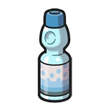 |
톡 쏘는 사이다. 포켓몬들도 좋아하는 것 같다. 포켓몬에게 주면 상처약을 뿌린 것과 같은 효과를 볼 수 있다. |
300원 |
| 후르츠밀크 |
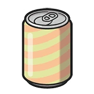 |
매우 달콤한 쥬스. 포켓몬들도 좋아하는 것 같다. 포켓몬에게 주면 상처약을 뿌린 것과 같은 효과를 볼 수 있다. |
300원 |
| 튼튼밀크 | 영양 만점의 우유. 요리에 사용할 수 있다. | 500원 | |